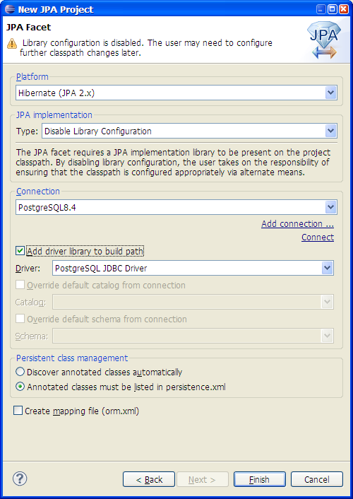
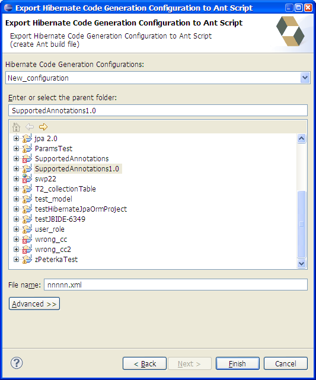

Dali Integration
Validate Hibernate Jpa project's associated console configuration existance. If Console Configuration does not exists user will see the error in Problems view: "Console Configuration "cc_name" does not exitst".
Hibernate plaftorm for JPA 1.0 implementation was renamed to "Hibernate JPA(1.x)" and for JPA 2.0 implementation was renamed to "Hibernate JPA(2.x)".

HQL Editor
HQL Editor in addition to the entity's class properties now show parent class properties.

Code Generation
Now possible to export Hibernate Code Generation Configuration to Ant build file. To find the wizard go to the File->Export->Hibernate->Ant Code Generation.
